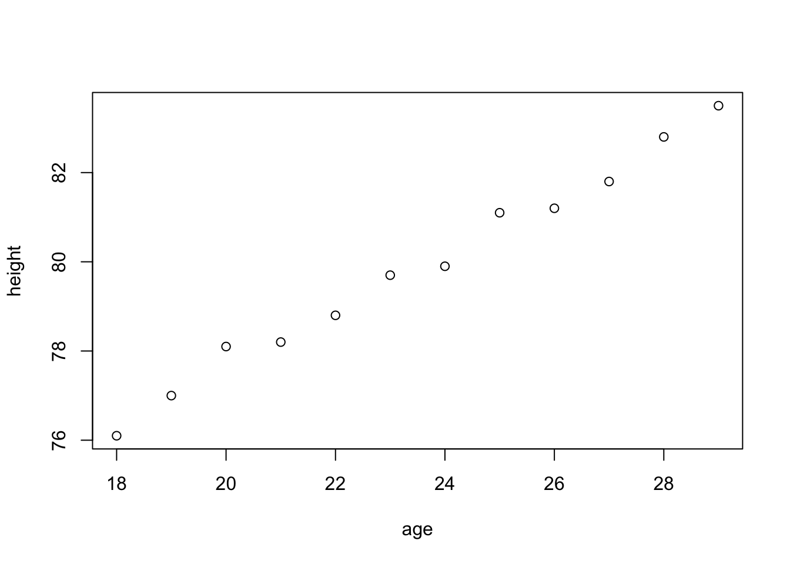

Chapter 4 R Objects
4.1 Introduction of R Objects
The entities R operates on are technically known as objects. Examples are vectors of numeric (real) or complex values, vectors of logical values, and vectors of character strings. These are known as “atomic” structures since their components are all of the same type, or mode, namely numeric, complex, logical, character, and raw.Use the is() command to determine what an object is.
4.1.1 Mode of Objects
Vectors must have their values all of the same mode. Thus any given vector must be unambiguously either logical, numeric, complex or character.
- Numeric is the default value type for most numbers. An integer is a subset of the numeric class, and may be used as a numeric value. You can perform any type of math or logical operation on numeric values, including:
# Note that pi is a built-in constant, and log() the natural log function.
log(3 * 4 * (2 + pi))
## [1] 4.12227
# Basic logical operations, including >, <, >= (greater than or equals),
# <= (less than or equals), == (exactly equals), and != (not equals).
2 > 3
## [1] FALSE
# Advanced logical operations, including # & (and), && (if and only if),
# | (or), and || (either or).
3 >= 2 && 100 == 1000/10
## [1] TRUENote that Inf (infinity), -Inf (negative infinity), NA (missing value), and NaN (not a number) are special numeric values on which most math operations will fail. (Logical operations will work, however.)
- Logical operations create logical values of either
TRUEorFALSE. To convert logical values to numerical values, use theas.integer()command:
- Character values are text strings. For example,
## [1] "I like Statistics"assigns the text string on the right-hand side of the <- to the named object in your workspace.
- Note that a vector can be empty and still have a mode. For example the empty character string vector is listed as
character(0)and the empty numeric vector asnumeric(0).
4.1.2 Length of Objects
By the mode of an object we mean the basic type of its fundamental constituents. This is a special case of a “property” of an object. Another property of every object is its length. The functions mode() and length() can be used to find out the mode and length of any defined structure.
Changing the length of an object
An “empty” object may still have a mode. For example,
makes e an empty vector structure of mode numeric. Similarly, character() is an empty character vector, and so on. Once an object of any size has been created, new components may be added to it simply by giving it an index value outside its previous range. Thus,
now makes e a vector of length 3, (the first two components of which are at this point both NA). This applies to any structure at all, provided the mode of the additional component(s) agrees with the mode of the object in the first place.
4.1.3 Getting and Setting Attributes
The function attributes(object) returns a list of all the non-intrinsic attributes currently defined for that object. The function attr(object, name) can be used to select a specific attribute. These functions are rarely used, except in rather special circumstances when some new attribute is being created for some particular purpose, such as associating a creation date or an operator with an R object.
When used on the left-hand side of an assignment, it can either associate a new attribute with the object or change an existing one. For example,
## [,1] [,2] [,3] [,4] [,5]
## [1,] 1 6 11 16 21
## [2,] 2 7 12 17 22
## [3,] 3 8 13 18 23
## [4,] 4 9 14 19 24
## [5,] 5 10 15 20 25allows R to treat z as if it were a 5x5 matrix.
4.1.4 The class of an object
All objects in R have a class, reported by the function class. For simple vectors, this is just the mode, for example, “numeric”, “logical”, “character” or “list”, but “matrix”, “array”, “factor”, and “data.frame” are other possible values.
A special attribute known as the class of the object is used to allow for an object-oriented style of programming in R. For example, if an object has class data.frame (we will discuss this shortly), it will be printed in a certain way, the plot() function will display it graphically in a certain way, and other so-called generic functions such as summary() will react to it as an argument in a way sensitive to its class.
For example, if village has the class data.frame, then,
age <- 18:29
height <- c(76.1, 77, 78.1, 78.2, 78.8, 79.7, 79.9,
81.1, 81.2, 81.8, 82.8, 83.5)
#Build a dataframe village
village <- data.frame(age = age,height = height)
village## age height
## 1 18 76.1
## 2 19 77.0
## 3 20 78.1
## 4 21 78.2
## 5 22 78.8
## 6 23 79.7
## 7 24 79.9
## 8 25 81.1
## 9 26 81.2
## 10 27 81.8
## 11 28 82.8
## 12 29 83.5will print it in data frame form, which is rather like a matrix, and

## age height
## Min. :18.00 Min. :76.10
## 1st Qu.:20.75 1st Qu.:78.17
## Median :23.50 Median :79.80
## Mean :23.50 Mean :79.85
## 3rd Qu.:26.25 3rd Qu.:81.35
## Max. :29.00 Max. :83.50To remove temporarily the effects of class, use the function unclass().
## $age
## [1] 18 19 20 21 22 23 24 25 26 27 28 29
##
## $height
## [1] 76.1 77.0 78.1 78.2 78.8 79.7 79.9 81.1 81.2 81.8 82.8
## [12] 83.5
##
## attr(,"row.names")
## [1] 1 2 3 4 5 6 7 8 9 10 11 12## [1] 1 2 3 4 5 6 7 8 9 10 11 12will print it as an ordinary list.
4.2 Data Structures
4.2.1 Arrays
Arrays are data structures that consist of only one type of scalar value (e.g., a vector of character strings, or a matrix of numeric values). The most common versions, one-dimensional and two-dimensional arrays, are known as vectors and matrices, respectively.
Ways to create arrays
- Common ways to create vectors (or one-dimensional arrays) include:
# Concatenates numeric values into a vector
a <- c(3, 7, 9, 11)
# Concatenates character strings into a vector
a <- c("a", "b", "c")
# Creates a vector of integers from 1 to 5 inclusive
a <- 1:5
# Creates a vector of 5 repeated ‘1’s
a <- rep(1, times = 5) To manipulate a vector:
# Extracts the 10th value from the vector ‘a’
a[10]
# Inserts 3.14 as the 5th value in the vector ‘a'
a[5] <- 3.14
# Replaces the 5-7th values with 2, 4, and 7
a[5:7] <- c(2, 4, 7) Unlike larger arrays, vectors can be extended without first creating another vector of the correct length. Hence,
- A factor vector is a special type of vector that allows users to create j indicator variables in one vector, rather than using j dummy variables (as in Stata or SPSS). R creates this special class of vector from a pre-existing vector
xusing thefactor()command, which separates x into levels based on the discrete values observed inx. These values may be either integer value or character strings. For example,
## [1] 1 1 1 1 1 2 2 2 2 9 9 9 9
## Levels: 1 2 9- By default,
factor()creates unordered factors, which are treated as discrete, rather than ordered, levels. Add the optional argumentordered = TRUEto order the factors in the vector:
x <- c("like", "dislike", "hate", "like", "don't know",
"like", "dislike")
factor(x, levels = c("hate", "dislike", "like", "don't know"),
ordered = TRUE) ## [1] like dislike hate like don't know
## [6] like dislike
## Levels: hate < dislike < like < don't know- If you omit the levels command, R will order the values according to the alphabetic order.
## [1] like dislike hate like don't know
## [6] like dislike
## Levels: dislike < don't know < hate < like- If you omit one or more of the levels in the list of levels, R returns levels values of
NAfor the missing level(s):
## [1] like dislike hate like <NA> like dislike
## Levels: hate < dislike < like- Build matrices (or two-dimensional arrays) from vectors (one-dimensional arrays). You can create a matrix in two ways:
- From a vector: Use the command
matrix(vector, nrow = k, ncol = n)to create a k × n matrix from the vector by filling in the columns from left to right. For example,
- From a vector: Use the command
## [,1] [,2] [,3]
## [1,] 1 3 5
## [2,] 2 4 6- From two or more vectors of length k: Use
cbind()to combine n vectors vertically to form a k × n matrix, orrbind()to combine n vectors horizontally to form a n × k matrix. For example:
# Creates a vector `x' of 3 values.
x <- c(11, 12, 13)
# Creates another vector `y' of 3 values.
y <- c(55, 33, 12)
# Creates a 2 x 3 matrix.
rbind(x, y) ## [,1] [,2] [,3]
## x 11 12 13
## y 55 33 12Note that row 1 is named x and row 2 is named y, according to the order in which the
arguments were passed to rbind().
## x y
## [1,] 11 55
## [2,] 12 33
## [3,] 13 12creates a 3 x 2 matrix. Note that the columns are named according to the order in which they were passed to cbind().
- R supports a variety of matrix functions, including:
det(), which returns the matrix’s determinant;t(), which transposes the matrix;solve(), which inverts the the matrix; and%*%, which multiplies two matricies. In addition, thedim()command returns the dimensions of your matrix. As with vectors, square brackets extract specific values from a matrix and the assignment mechanism<-replaces values. For example:
# Extracts the third column of Iowa.
Iowa[,3]
# Extracts the first row of Iowa.
Iowa[1,]
# Inserts 13 as the value for row 1, column 3.
Iowa[1,3] <- 13
# Replaces the first row of Iowa.
Iowa[1,] <- c(2,2,3) If you encounter problems replacing rows or columns, make sure that the dims() of the vector matches the dims() of the matrix you are trying to replace.
- An n-dimensional array is a set of stacked matrices of identical dimensions. For example, you may create a three dimensional array with dimensions (2, 3, 2) by stacking 2 matrices each with 2 rows and 3 columns, so there are 2 x 3 x 2 = 12 entries in this array.
# Creates a 2 x 3 matrix populated with 8's.
a <- matrix(8, 2, 3)
# Creates a 2 x 3 matrix populated with 9's.
b <- matrix(9, 2, 3)
array(c(a, b), c(2, 3, 2)) ## , , 1
##
## [,1] [,2] [,3]
## [1,] 8 8 8
## [2,] 8 8 8
##
## , , 2
##
## [,1] [,2] [,3]
## [1,] 9 9 9
## [2,] 9 9 9creates a 2 x 3 x 2 array with the first level [ , ,1] populated with matrix a (8’s),
and the second level [ , ,2] populated with matrixb (9’s).
It uses square brackets to extract values. For example, [1, 2, 2] extracts the second
value in the first row of the second level. You may also use the <- operator to
replace values.
If an array is a one-dimensional vector or two-dimensional matrix, R will treat the array using the more specific method. Three functions especially helpful for arrays:
is()returns both the type of scalar value that populates the array, as well as the specific type of array (vector, matrix, or array more generally).dim()returns the size of an array, where
## [1] 2 3indicates that the array is two-dimensional (a matrix), and has 33 rows and 5 columns.
- The single bracket
[ ]indicates specific values in the array. Use commas to indicate the index of the specific values you would like to pull out or replace:
dim(a)
# Pull out the 10th value in the vector 'a'
a[10]
dim(b)
# Pull out the first 12 rows of 'b'
b[1:12, ]
# Pull out the value in the first row, second column of 'c'
c[1, 2]
dim(d)
# Pulls out a vector of 1,000 values
d[ , 3, 1] Apply
The apply function offers a very elegant way of handling arrays and matrices. It works by successfully applying the function of your choice to each row (first dimension), each column (second dimension), or each level of a higher dimension. The syntax is
data is the names of your matrix or array, and function is the name of any R function that want to apply to your data. For a matrix of two dimensions, the option dim can take the integer value of or 2 to refer to the rows or columns, respectively. The option, …, can be filled in with options to be passed on to the function being specifies. We can use such a function to compute the maximum value of each column of a matrix
## [1] 8 8 84.2.2 Lists
Unlike arrays, which contain only one type of scalar value, lists are flexible data structures that can contain heterogeneous value types and heterogeneous data structures. Lists are so flexible that one list can contain another list. For example, the list output can contain coef, a vector of regression coefficients; variance, the variance-covariance matrix; and another list terms that describes the data using character strings. Use the names() function to view the named elements in a list, and to extract a named element, use
For lists where the elements are not named, use double square brackets [[ ]] to extract elements:
# Extracts the 4th element from the list 'L'
L[[4]]
# Replaces the 4th element of the list 'L' with a matrix 'b'
L[[4]] <- b Like vectors, lists are flexible data structures that can be extended without first creating another list of with the correct number of elements:
# Creates an empty list
L <- list()
# Inserts a vector, and names that vector 'coefficients'
L$coefficients <- c(1, 4, 6, 8)
# Pull out the value in the first row, second column of 'c'
# within the list, inserts the vector into the 4th position
# in the list. If this list doesn't already have 4 elements,
# the empty elements will be 'NULL' values
L[[4]] <- c(1, 4, 6, 8)Alternatively, you can easily create a list using objects that already exist in your workspace:
4.2.3 Data Frames
A data frame (or data set) is a special type of list in which each variable is constrained to have the same number of observations. A data frame may contain variables of different types (numeric, integer, logical, character, and factor), so long as each variable has the same number of observations.
grp <- c(1, 2, 2, 1, 1, 1, 2, 2, 1, 2, 2, 1)
gpa <- c(4, 3.5, 2.8, 3.9, 2.2, 3.8, 2.7, 3.8, 4, 3.6, 3.4, 2.1)
age <- c(21, 22, 19, 32, 25, 22, 20, 23, 21, 24, 22, 30)
sex <- c("F", "M", "M", "M", "F", "F", "M", "M", "F", "M", "F",
"F")
# Build a dataframe dat
dat <- data.frame(grp = grp, gpa = gpa, age = age, sex = sex)
dat## grp gpa age sex
## 1 1 4.0 21 F
## 2 2 3.5 22 M
## 3 2 2.8 19 M
## 4 1 3.9 32 M
## 5 1 2.2 25 F
## 6 1 3.8 22 F
## 7 2 2.7 20 M
## 8 2 3.8 23 M
## 9 1 4.0 21 F
## 10 2 3.6 24 M
## 11 2 3.4 22 F
## 12 1 2.1 30 FThus, a data frame can use both matrix commands and list commands to manipulate variables and observations.
# Extracts obs. 1-10 and all associated variables
dat[1:10,]
## grp gpa age sex
## 1 1 4.0 21 F
## 2 2 3.5 22 M
## 3 2 2.8 19 M
## 4 1 3.9 32 M
## 5 1 2.2 25 F
## 6 1 3.8 22 F
## 7 2 2.7 20 M
## 8 2 3.8 23 M
## 9 1 4.0 21 F
## 10 2 3.6 24 M
# Extracts all observations that belong to group 1
dat[dat$grp == 1,]
## grp gpa age sex
## 1 1 4.0 21 F
## 4 1 3.9 32 M
## 5 1 2.2 25 F
## 6 1 3.8 22 F
## 9 1 4.0 21 F
## 12 1 2.1 30 F
# Saves the variable 'grp' as a vector 'group' in
# the workspace, not in the data frame
group <- dat$grp
# Saves the 4th variable as a 'var4' in the workspace
var4 <- dat[[4]] 4.2.4 Frequency Tables From Factors
Recall that a factor defines a partition into groups. Similarly a pair of factors defines a two way cross classification, and so on. The function table() allows frequency tables to be calculated from equal length factors. If there are k factor arguments, the result is a k-way array of frequencies.
Suppose, for example, we have a sample of 30 tax accountants from all the states and territories of Australia1 and their individual state of origin is specified by a character vector of state mnemonics as
state <- c("tas", "sa", "qld", "nsw", "nsw", "nt", "wa", "wa",
"qld", "vic", "nsw", "vic", "qld", "qld", "sa",
"tas", "sa", "nt", "wa", "vic", "qld", "nsw",
"nsw", "wa", "sa", "act", "nsw", "vic", "vic", "act")Notice that in the case of a character vector, “sorted” means sorted in alphabetical order. A factor is similarly created using the factor() function:
## [1] tas sa qld nsw nsw nt wa wa qld vic nsw vic qld qld
## [15] sa tas sa nt wa vic qld nsw nsw wa sa act nsw vic
## [29] vic act
## Levels: act nsw nt qld sa tas vic waTo find out the levels of a factor the function levels() can be used.
## [1] "act" "nsw" "nt" "qld" "sa" "tas" "vic" "wa"The assignment
gives statefr a table of frequencies of each state in the sample.
The table() command can also summarize bivariate data in a similar manner as it summarized univariate data. Suppose a student survey is done to evaluate if students who smoke study less. The data recorded is
Person Smokes amount of Studying
1 Y less than 5 hours
2 N 5 - 10 hours
3 N 5 - 10 hours
4 Y more than 10 hours
5 N more than 10 hours
6 Y less than 5 hours
7 Y 5 - 10 hours
8 Y less than 5 hours
9 N more than 5 hours
10 Y 5 - 10 hoursWe can handle this in R by creating two vectors to hold our data, and then using the table command.
smokes = c("Y", "N", "N", "Y", "N", "Y", "Y", "Y", "N", "Y")
amount = c(1, 2, 2, 3, 3, 1, 2, 1, 3, 2)
table(smokes,amount)## amount
## smokes 1 2 3
## N 0 2 2
## Y 3 2 14.3 Exercises
- Create the following matrices
- \(\mathbf{a} = \begin{bmatrix} 1 & 2 & 3\end{bmatrix}\);
- \(\mathbf{C} = \begin{bmatrix} 3 & 2 \\ 6 & 4\end{bmatrix}\);
- \(\mathbf{I} = \begin{bmatrix} 1 & 0 & 0 \\ 0 & 1 & 0 \\ 0 & 0 & 1\end{bmatrix}\);
- \(\mathbf{O} = \begin{bmatrix} 0 & 0 & 0 & 0 \\ 0 & 0 & 0 & 0 \end{bmatrix}\).
Find \(\mathbf{aa'}\) and \(\mathbf{a'a}\) and \(\mathbf{C}^{-1}\).
- Without running R, guess the following
A <- matrix(c(2, 4, 3, 1, 5, 7), nrow = 2, ncol = 3, byrow = TRUE)
A
A[2, 3]
A[2, ]
A[, c(1, 3)]
t(A)- Without running R, guess the following